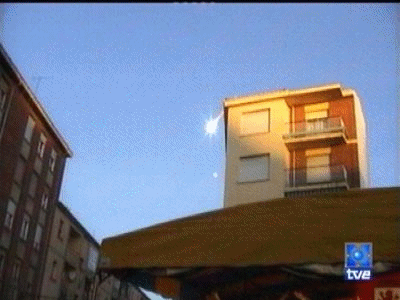

<!--#set var="year" value="2004" --><!--#set var="month" value="1" --><!--#include virtual="/header.html" -->
<ul>
  <li>
    <figure class="right side">
      <figcaption>
        Le météore filmé par Luis Alfonso Fernandez Arenas et Carmen Blanco
      </figcaption>
      
    </figure>
    <span class="jour">Dim 04</span>
    <ul>
      <li><span class="heure">17:45</span> A <span class="place">Bordeaux (Gironde)</span>, plusieurs témoins
        aperçoivent la chute très rapide de <a href="/science/crypto/ufo/enquete/meprise/rentree/meteore/index.html">1
          grosse boule de feu</a> <span class="note">Il s'agit probablement  d'une rentrée atmosphérique</span> <span
            class="source">SEPRA: <a href="https://www.cnes-geipan.fr/geipan/regions/aqu/etude_2004-01-01617.html">PAN classé B</a></span>.
      </li>
      <li><span class="heure">17:47</span> A <span class="place">Villalbeto de la Pe&ntilde;a (Palencia, Espagne)</span>,
        observation d'un météore.</li>
      <li>Dans les montagnes de <span class="place">Leon (Espagne)</span>, Salvador Diez photographie un météore
        semblable. </li>
    </ul>
  </li>
</ul>
<!--#include virtual="/footer.html" -->
